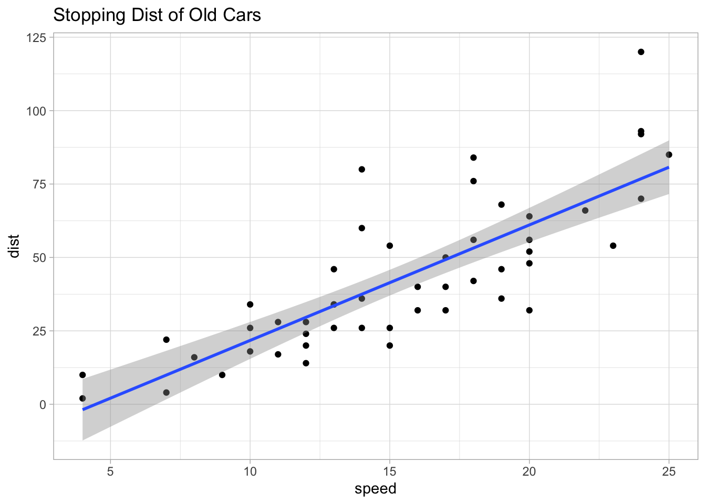
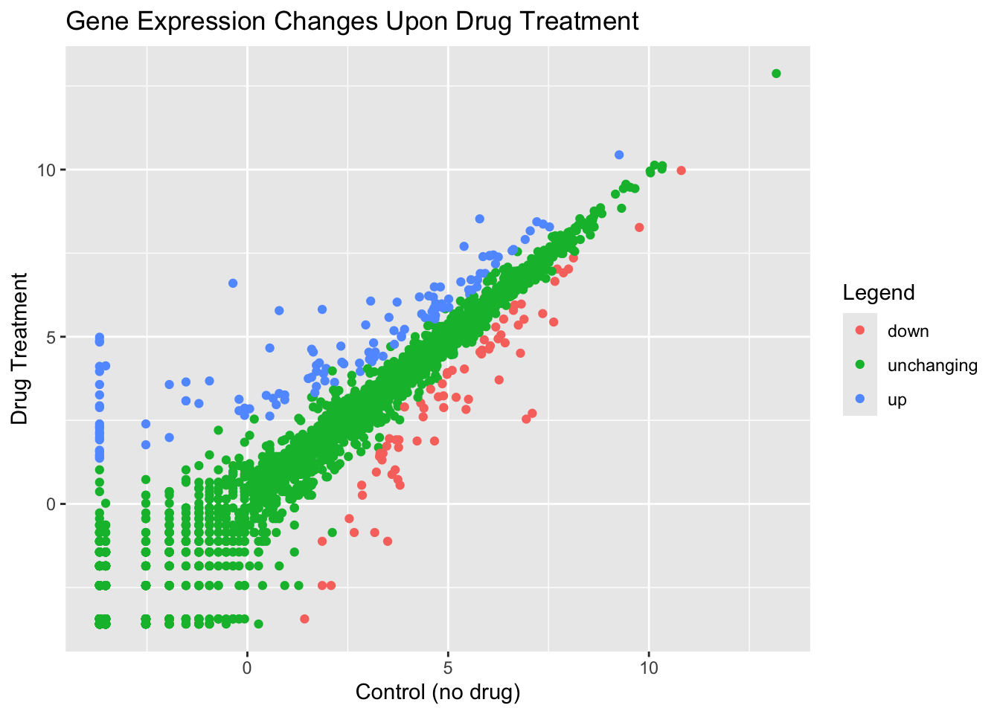
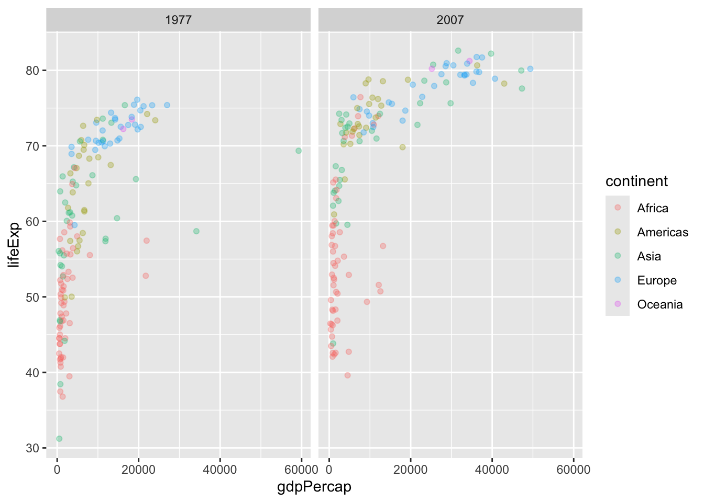
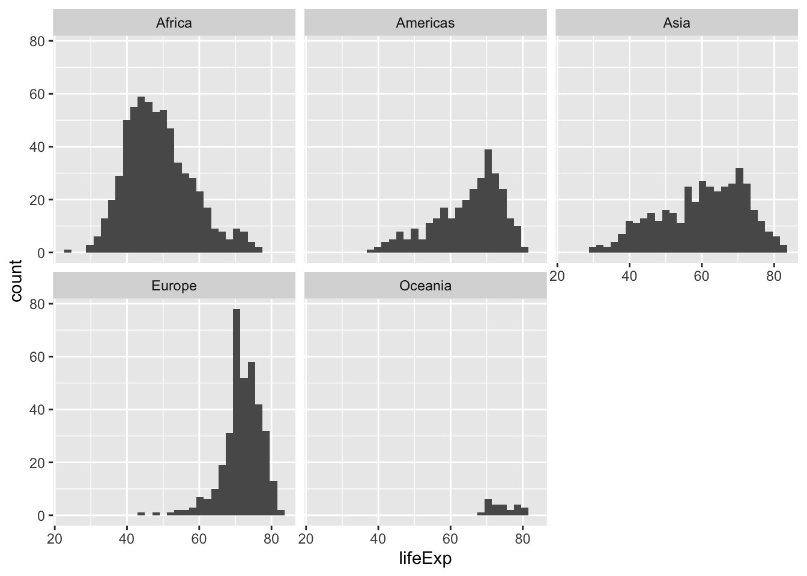
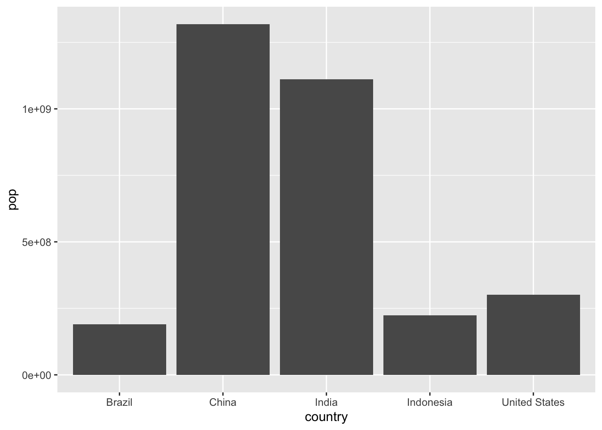
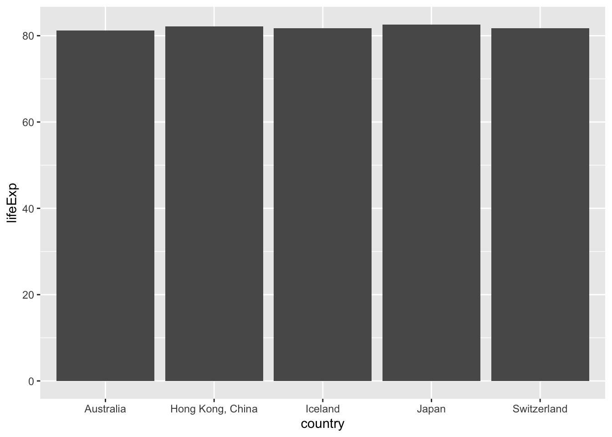

head(cars) speed dist
1 4 2
2 4 10
3 7 4
4 7 22
5 8 16
6 9 10there are many graphics systems in R for making plots These include so-called “base” R graphics like the plot() function and add on packages like ggplot2.
We can use the in-built cars dataset:
head(cars) speed dist
1 4 2
2 4 10
3 7 4
4 7 22
5 8 16
6 9 10plot(cars)
The main function in ggplot2 packet is the ggplot, and we before we run it we must install ggplot2 by running ‘install.packages(“ggplot2”)’ in the console
N.B. We never run
install.packages()in our quarto doc because that would run it each time we render and become problematic
Once installed we need to load up the package into our R session
library(ggplot2)
ggplot(cars)
Every ggplot has at least 3 layers: - The data (a data.frame of the stuff we want to plot) - The aesthetics (how the data maps to the plot) - The geom layer (how you want the plot drawn, e.g. points, lines, etc.)
ggplot(cars) +
aes(x=speed, y=dist) +
geom_point()
Lets add a trend line that shows the relationship between speed and distance.
ggplot(cars) +
aes(x=speed, y=dist) +
geom_point() +
geom_smooth(method = "lm") +
theme_light() +
labs(title="Stopping Dist of Old Cars")`geom_smooth()` using formula = 'y ~ x'
url <- "https://bioboot.github.io/bimm143_S20/class-material/up_down_expression.txt"
genes <- read.delim(url)
head(genes) Gene Condition1 Condition2 State
1 A4GNT -3.6808610 -3.4401355 unchanging
2 AAAS 4.5479580 4.3864126 unchanging
3 AASDH 3.7190695 3.4787276 unchanging
4 AATF 5.0784720 5.0151916 unchanging
5 AATK 0.4711421 0.5598642 unchanging
6 AB015752.4 -3.6808610 -3.5921390 unchangingsum(genes$State == "up")[1] 127genes[genes$State=="up",] Gene Condition1 Condition2 State
10 ABCC3 0.93057376 3.260304 up
11 ABCC5 4.60042520 5.499443 up
420 AHNAK 6.62848950 7.611752 up
421 AHNAK2 3.65105100 5.181916 up
496 ALPPL2 0.55860496 2.625953 up
500 AMIGO2 3.14356730 4.817252 up
503 AMOTL2 5.31663230 6.642013 up
525 ANXA2 7.52371000 8.284804 up
713 BCAS1 -3.68086100 1.604258 up
733 BMP7 -3.68086100 2.392754 up
736 BOC 5.79981700 6.891901 up
949 CACNG4 -0.06942624 2.863645 up
970 CAPS 3.18538760 4.542858 up
1050 CDH6 5.39595460 7.703885 up
1057 CDK6 5.73323700 6.704522 up
1062 CDON 4.42533870 5.571092 up
1067 CEACAM5 -3.68086100 3.571091 up
1068 CEACAM6 -3.68086100 4.114453 up
1134 CLU 2.79307000 4.210916 up
1151 COL1A1 4.87202170 5.865926 up
1158 COL9A3 0.93057376 3.114453 up
1168 COTL1 5.51280100 6.403785 up
1183 CRABP2 1.71906960 4.144826 up
1186 CRIM1 4.51553630 6.223422 up
1274 CTD-2033D15.1 0.05610465 2.845267 up
1333 CTGF 1.71906960 3.960744 up
1356 CYP1B1 4.62088900 5.582232 up
1358 CYP26B1 2.40187930 4.189221 up
1364 CYR61 4.65601730 6.492079 up
1461 DSCAM -3.68086100 1.559864 up
1462 DSCAM-AS1 -3.68086100 4.872747 up
1492 EEF1A2 0.55860496 4.663152 up
1523 EMP1 6.03529170 7.417067 up
1536 EPHA5 3.91408560 5.221642 up
1546 ERBB4 3.14356730 4.367219 up
1659 FBLN1 4.80653240 6.489123 up
1661 FBN2 9.25945200 10.440404 up
1691 FHL2 2.17158170 3.636680 up
1705 FMN1 4.63101340 6.185574 up
1712 FOSL2 2.81099200 3.960744 up
1731 FXYD3 1.96299520 4.051717 up
1754 GATA3 -3.68086100 4.986129 up
1772 GFRA1 1.64106700 4.542858 up
1788 GLRA3 -3.68086100 1.466755 up
1819 GPC1 5.71906950 6.492079 up
1821 GPCPD1 4.64606760 5.854485 up
1822 GPER -1.94389530 1.986129 up
1834 GPR176 4.34150700 5.681397 up
1869 GXYLT2 3.02573100 4.537144 up
1875 H2AFJ -3.68086100 1.986129 up
1922 HIST1H2BK 0.79307020 3.301331 up
1925 HIST2H4A -1.52885800 3.083426 up
1926 HIST2H4B -1.52885800 3.083426 up
1936 HMGA2 5.92235330 6.894138 up
1968 HSPG2 6.59138000 7.571790 up
1981 IER3 -1.20692980 3.002808 up
1996 IGFBP5 6.12756730 7.447085 up
1997 IGFBP7 4.84183000 5.984030 up
2086 KCNE4 -3.68086100 1.367219 up
2111 KIAA1324 -3.52885800 4.129720 up
2124 KIRREL 6.17850160 7.178250 up
2154 KRT5 -0.06942624 2.647327 up
2171 KYNU -3.68086100 3.260304 up
2172 L1CAM 0.47114208 3.246365 up
2251 LIPG 2.35378530 4.239345 up
2253 LIX1 1.51553620 3.749689 up
2331 MALAT1 6.03147500 7.431769 up
2332 MALT1 7.36520200 8.369632 up
2391 MFSD2A 1.93057370 3.678805 up
2457 MSRB3 5.01417400 6.127821 up
2471 MTRNR2L8 4.28492300 6.191041 up
2472 MTRNR2L9 3.52642440 5.579455 up
2475 MUC1 3.10049870 4.253351 up
2480 MUC5B -1.94389530 3.571091 up
2485 MYC 3.15764280 4.386413 up
2492 MYL9 5.56917430 6.705796 up
2537 NEAT1 1.79307010 4.218076 up
2605 NRP1 -2.52885800 1.769318 up
2618 NTS 1.86345960 5.817252 up
2635 OAS3 -3.68086100 1.417845 up
2684 OR52E8 -3.68086100 2.934904 up
2783 PDGFC 5.53723100 6.265497 up
2796 PEAK1 5.01803640 5.879537 up
2809 PGR 1.60042510 4.625953 up
2820 PIEZO1 4.69031050 5.998656 up
2859 PLK2 7.04384230 8.167194 up
2868 PMP22 3.83746430 4.994492 up
2924 PRICKLE1 3.04099750 4.328049 up
3039 RASGRP1 1.89740680 3.899714 up
3069 RERG -3.68086100 2.083426 up
3109 RN7SL1 6.91822500 7.909146 up
3115 RND3 3.83746430 5.035598 up
3123 RNF144B 6.24921940 7.385618 up
3575 RP11-366L20.2 -0.20692979 2.788683 up
3990 RP11-738E22.2 4.70476200 5.863645 up
4034 RP11-79P5.2 0.64106710 3.159777 up
4292 RP5-977B1.11 4.60042520 5.749689 up
4325 RPS6KB1 5.59784650 6.399068 up
4339 S100A14 -0.94389530 3.678805 up
4340 S100A16 3.66096690 4.774183 up
4344 S100P -3.68086100 1.917416 up
4389 SEMA3C 2.94687560 5.354280 up
4401 SERPINA3 -3.68086100 2.881792 up
4410 SETD7 4.67081450 5.531408 up
4430 SHISA3 0.71906954 2.969255 up
4483 SLC39A6 7.20838930 8.439064 up
4490 SLC6A14 -3.68086100 3.960744 up
4500 SLC7A2 3.07105500 6.067658 up
4544 SOX2 -3.68086100 2.260304 up
4557 SPDEF -3.68086100 2.144827 up
4578 SPTSSB -0.35893290 6.600154 up
4593 STARD10 3.37803270 4.417845 up
4624 SULF1 -2.52885800 2.392754 up
4625 SULF2 0.79307020 5.781451 up
4650 SYTL2 2.32912300 4.719736 up
4663 TAGLN 3.72853000 6.035598 up
4677 TBC1D9 4.68546100 5.639349 up
4719 TFF1 -3.68086100 4.840635 up
4732 THBS1 5.78629160 8.526009 up
4742 TIMP3 -1.52885800 3.647327 up
4801 TNNC1 1.60042510 3.788683 up
4880 TSPYL5 -3.68086100 2.314752 up
4960 VCAN 5.86774700 7.396703 up
4961 VCAN-AS1 1.68059550 3.328049 up
5027 XIST 1.71906960 3.514060 up
5092 ZIK1 -0.20692979 3.129720 up
5136 ZNF460 3.08585200 4.354280 upA useful new function in this context is the table() function:
table(genes$State)
down unchanging up
72 4997 127 ggplot(genes) +
aes(x=Condition1, y=Condition2, color = State) +
labs(title = "Gene Expression Changes Upon Drug Treatment", x = "Control (no drug)", y = "Drug Treatment", color = "Legend") +
geom_point()
Here we read the famous gapmider dataset
# File location online
url <- "https://raw.githubusercontent.com/jennybc/gapminder/master/inst/extdata/gapminder.tsv"
gapminder <- read.delim(url)
head(gapminder) country continent year lifeExp pop gdpPercap
1 Afghanistan Asia 1952 28.801 8425333 779.4453
2 Afghanistan Asia 1957 30.332 9240934 820.8530
3 Afghanistan Asia 1962 31.997 10267083 853.1007
4 Afghanistan Asia 1967 34.020 11537966 836.1971
5 Afghanistan Asia 1972 36.088 13079460 739.9811
6 Afghanistan Asia 1977 38.438 14880372 786.1134Q. How many entries (i.e. rows) are there in this dataset?
nrow(gapminder)[1] 1704Q. How many countries are in this dataset
length(table(gapminder$country))[1] 142length(unique(gapminder$country))[1] 142Let’s make our first plot of the dataset:
p <- ggplot(gapminder) +
aes(x = gdpPercap, y = lifeExp) +
geom_point(aes(color=continent), alpha = 0.3)p
p + facet_wrap(~continent)
Now we will make a plot for years 1977 and 2007
library(dplyr)
Attaching package: 'dplyr'The following objects are masked from 'package:stats':
filter, lagThe following objects are masked from 'package:base':
intersect, setdiff, setequal, uniongapminder_1977_2007 <- gapminder %>% filter (year == 2007 | year == 1977)
ggplot(gapminder_1977_2007) +
aes(x = gdpPercap, y = lifeExp) +
geom_point(aes(color=continent), alpha = 0.3) +
facet_wrap(~year)
Q. Make a histogram of lifeExp faceted by continent and colored by continent
Faceted by continent:
ggplot(gapminder) +
aes(lifeExp) +
geom_histogram() +
facet_wrap(~continent)`stat_bin()` using `bins = 30`. Pick better value `binwidth`.
Coloured by continent:
ggplot(gapminder) +
aes(lifeExp) +
geom_histogram(aes(fill=continent))`stat_bin()` using `bins = 30`. Pick better value `binwidth`.
Organizing gapminder into the top 5 values of population in descending order in the year 2007
gapminder_top5 <- gapminder %>%
filter(year==2007) %>%
arrange(desc(pop)) %>%
top_n(5, pop)
gapminder_top5 country continent year lifeExp pop gdpPercap
1 China Asia 2007 72.961 1318683096 4959.115
2 India Asia 2007 64.698 1110396331 2452.210
3 United States Americas 2007 78.242 301139947 42951.653
4 Indonesia Asia 2007 70.650 223547000 3540.652
5 Brazil Americas 2007 72.390 190010647 9065.801Creating the bar chart:
ggplot(gapminder_top5) +
geom_col(aes(x = country, y = pop))
Q. How do you do this for life expectancy?
gapminder_top5_lifeExp<- gapminder %>%
filter(year==2007) %>%
arrange(desc(lifeExp)) %>%
top_n(5, lifeExp)
gapminder_top5_lifeExp country continent year lifeExp pop gdpPercap
1 Japan Asia 2007 82.603 127467972 31656.07
2 Hong Kong, China Asia 2007 82.208 6980412 39724.98
3 Iceland Europe 2007 81.757 301931 36180.79
4 Switzerland Europe 2007 81.701 7554661 37506.42
5 Australia Oceania 2007 81.235 20434176 34435.37ggplot(gapminder_top5_lifeExp) +
geom_col(aes(x = country, y = lifeExp))